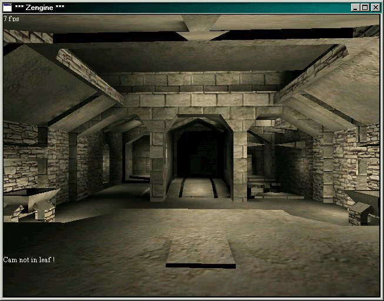

<link href="style.css" rel="stylesheet"/>

<article>
  <h1><a href="../">../</a> Some little Secrets</h1>

  <!-- Quake - passt eigentlich besser zu Inspirationen -->
  
  <p>In the beginning they used Quake levels for testing purposes. -Vaana</p>

  <!-- KaiRos KSO Clan -->
  
  <p>Kai Rosenkranz (KaiRo) was part of a clan with the acronym "KSO",
    which can be seen in the night sky texture of Gothic Vanilla.</p>

  <!-- Tool Eastereggs? -->
  
  <p>Tool fans in the team? Might be intentional,<br>
    might be not, but I couldn't oversee it. -lali</p>

  <!-- Gomez' Armor -->
  
  <p>Don-Esteban found this armor which was most likely the model for the
    engraving on the armor of Gomez' and/or the king respectively.</p>

  <!-- Sword -->
  
  <p>We expect the inscription on this sword texture to be:<br>
    For a short life we hail Gomez.</p>

  <!-- Hidden Messages -->
  <h3>Hidden Orcish Messages</h3>
  

  <p>As seen above, Mike had developed an orcish alphabet in the design process of Gothic. A fan <a href="../postrelease/fonts/OrcRunes.ttf">created a font</a> out of it. The following Messages you can find inside the game, they were translated by Flatcher Goth:</p>

  
  <p>The above runes say: "Gateway".</p>

  
  <p>These signs say: "Peace".</p>

  
  <p>Here is written: "Beware".</p>

  
  <p>And here: "Gefahr".</p>

  
  <p>On this orcish weapon is written: "Horst".</p>

  
  <p>And these runes on the english Cover say: Action Adventure Game.</p>

  <h3>Handbook Easteregg</h3>
  
  <p>When you examine the german handbook cover and look carefully, you will see a message. I cannot decipher everything, but: "Magier sollten sich am Eingang zum...", which means: "Mages should ... themselves at the entrance."</p>

  <p>I had no .psd of the manual or didn't consider it. But Nex took a deeper look and found not only more of this message, but other messages too. I've inverted the colour for our black background here:</p>

  
  
  
  

  <p>On the third one is written: "'24/15/8654/16' 'COONOFICAT'". No idea what the meaning could be. We also do not know what the meaning of the second one is or what the mages are supposed to do at the entrance to the valley. It all may have no deeper meaning. But interesting nonetheless.</p>

  <!-- Marvin, 42, What was the question? -->
  <h3>Cheat Mode</h3>
  <p>In Gothic you activate the Cheat-Mode by typing 'Marvin' inside the
    character screen. Marvin is also the name of a Cut NPC from the Alpha. You
    deactive the Cheat-Mode by typing '42' inside the character screen, which is
    the answer of the Supercomputer from 'The Hitchhiker’s Guide to the Galaxy'.
    And when deactivated, a text is printed: "What was the question?"</p>
  <p>You can find the cheat codes <a href="https://www.worldofgothic.de/gothic/gothic_cheats.htm">here</a>.</p>

  <h3>Hommagen</h3>
  <ul>
    <li>Mud: VIVA-Moderator Niels Ruf</p>
    <li>Charlotte (Scripts: "Babe von VIVA"): Charlotte Roche</p>
    <li>Steve: (Scripts: "Steve Gätchen"): More infos?</p>
    <li>Baal Netbek: Joachim Nettelbeck (PC Player Editor); the whole story about
      why Nettelbeck was included in this form <a href="https://gothic.arhn.eu/G1/milosnik_drzew.html">you can read here</a>, thanks to Johnny.</p>
    <li>The internal name of Uriziel is "Mythrilklinge" (LOTR)</p>
  </ul>
</article>